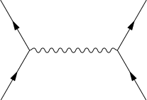
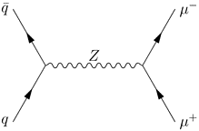
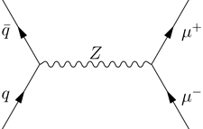
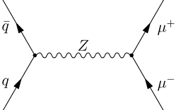
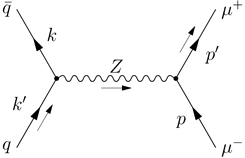
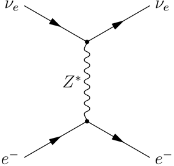
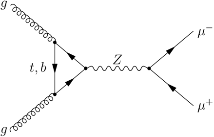
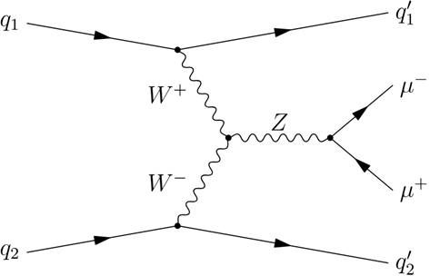

Instructions for Drawing Feynman Diagrams Using Asymptote (Vector Graphics Language)
Feynman diagrams are a powerful way to visualize particle interactions in physics, and the Asymptote language, with its feynman package, provides an elegant tool to create them. This guide will walk you through the process of drawing a Feynman diagram for the process using Asymptote. One can adapt these steps for other diagrams by adjusting points, propagators, labels, and vertices as needed. More code examples will be provided at the end of this document for references.
The source code for feynman package can be found here : https://github.com/vectorgraphics/asymptote/blob/master/base/feynman.asy
Prerequisites
- Ensure you have Asymptote installed on your system: Linux OS or WSL users can easily install a recent version of Asymptote with the command sudo apt install asymptote . In the directory of the .asy file, compile with asy -V -f pdf filename.asy . Installing Asymptote on Microsoft Windows is possible, but relatively complicated. Windows users can run Asymptote in the browser without installing it at http://asymptote.ualberta.ca/.
- If you are using an offline complier, create a new .asy file (e.g., feynman_diagram.asy) to write your code.
To draw Feynman diagrams using the Asymptote language, we being by loading the feynman module through the following line of code:
import feynman;
Next, we set default line width to 0.5 bp (or any other value you prefer), and scale all other defaults of the feynman module appropriately using the following lines of code:
currentpen = linewidth(0.5); // set line width
fmdefaults(); // scale all other defaults.
Step 1: Marking Spatial Points
We begin by defining an arbitrary length L by
real L = 50;
With such setting, we can easily uniformly change the overall size of the Feynman diagram by increasing or decreasing the value of L. Next, we define two spatial points on the space separated by some multiple of L. The two points can be placed on the x-axis:
pair pl = (-0.75*L,0); // point on the left (pl = point left)
pair pr = (+0.75*L,0); // point on the right (pr = point right)
or along the y axis (if needed):
pair pu = (0,+0.75*L); // point up
pair pd = (0,-0.75*L); // point down
where pl (short for point left) and pr (short for point right) are separated by 1.5L bp. Now we can easily mark additional spatial points required to construct our code for Feynman diagram drawing, relative to those two points. For example, to draw Feynman diagram of muon pair production via s-channel exchange of Z boson (), we need to draw 4 additional points. Two points will be on the left-hand side of pl (one above the x-axis, and one below) and two other points will be on the right-hand side of pr. We mark those points by the following four lines of code:
pair pl_l_u = pl + L*dir(+120); // upper-left-hand side of pl, by an angle +120 measured counterclockwise from the positive x-axis.
pair pl_l_d = pl + L*dir(-120); // down-left-hand side of pl, by an angle -120 measured counterclockwise from the positive x-axis.
pair pr_r_u = pr + L*dir(+60); // upper-right-hand side of pr, by an angle +60 measured counterclockwise from the positive x-axis.
pair pr_r_d = pr + L*dir(-60); // upper-right side relative to pr, by an angle -60 measured counterclockwise from the positive x-axis.
Notice that here L can be multiplied by a number to adjust the displacement between to spatial points. For example, if we wished pl_l_u to be further away from pl, we can multiply L by, for instance, 1.5 as follows:
pair pl_l_u = pl + 1.5*L*dir(+120);
Step 2: Drawing Propagators (Particle Lines)
If we will to run the Asymptote code:
import feynman;
currentpen = linewidth(0.5); // set line width
fmdefaults(); // scale all other defaults.
real L = 50;
pair pl = (-0.75*L,0); pair pr = (+0.75*L,0);
pair pl_l_u = pl + L*dir(+120);
pair pl_l_d = pl + L*dir(-120);
pair pr_r_u = pr + L*dir(+60);
pair pr_r_d = pr + L*dir(-60);
we won’t see anything. This is because we only defined some points in the space, and no lines are actually drawn yet. In Asymptote, we use the draw() function to draw lines linking two predefined spatial points. For example, if we want to draw a line linking points pl and pl_l_u, we write:
draw(pl -- pl_l_u);
If we wish the lined to be dashed, we write:
draw(pl -- pl_l_u,dashed);
The feynman package provides functions to draw fermions by drawFermion(), vector bosons by drawPhoton(), gluons by drawGluon(), scalar lines by drawScalar(), ghost lines by drawGhost(), and double lines by drawDoubleLine().
To draw Feynman diagram of muon pair production via s-channel exchange of Z boson (), the predefined spatial points are linked as follows:
drawFermion(pl -- pl_l_u); // antiquark leaving point pl heading to point pl_l_u
drawFermion(pl_l_d --pl); // quark leaving point pl_l_d heading to point pl
drawPhoton(pl -- pr); // Z boson leaving point pl heading to point pr.
drawFermion(pr -- pr_r_u); // muon leaving point pr heading to point pr_r_u
drawFermion(pr_r_d -- pr); // antimuon leaving point pr_r_d heading to point pr
Now if we run the code we get the following diagram (without labels):
Step 3: Drawing LaTeX Labels
Adding labels in Asymptote is relatively easy. You just need to tell Asymptote the point in space (or any line connecting two points) you want to label, what do label it, and where the label should be place relative to the point (or the line), whether it should be up, down, left or right. Continuing our example, we label the elements of Feynman diagram for the process as follows:
label("$q$",pl_l_d,left); // to label quark propagator, label is placed on the left-hand side of the point
label("$\bar{q}$",pl_l_u,left); // to label the antiquark propagator, label is placed on the left-hand side of the point
label("$Z$",pl--pr,up); // to label the Z boson propagator, label is placed up side the pl--pr line
label("$\mu^-$",pr_r_u,right); // to label the muon propagator, label is placed on the right-hand side of the point
label("$\mu^+$",pr_r_d,right); // to label the antimuon propagator, label is placed on the right-hand side of the point
Now if we run the full code we get the following diagram:
Say that we don’t want our fermion labels placed beside the points. Instead we want them placed beside the arrows, we update the labels into the following;
label("$q$ ",pl_l_d--pl,left); // to label the q line, label is placed on the left-hand side of the point
label("$\bar{q}$ ",pl--pl_l_u,left); // to label the antiquark line, label is placed on the left-hand side of the point
label("$Z$",pl--pr,up); // to label the Z boson propagator, label is placed up side the vector boson line
label("$\mu^+$",pr--pr_r_u,right); // to label the antimuon propagator, label is placed on the right-hand side of the point
label("$\mu^-$",pr_r_d--pr,right); // to label the muon propagator, label is placed on the right-hand side of the point
By compiling we get:
(Notice that we added some empty space in the label text to adjust the separation between the text and arrows of the lines. The current Feynman package doesn’t include this auto adjusting yet, so we do it manually until the package is update for further notice.)
Step 4: Drawing Vertices
Sometimes we may like to add some vertices in our Feynman diagrams. The Asymptote feynman package provides a wide variety of different kinds of vertices to draw. To use the vertices functions we just need to specify the point in space to draw the vertex above, and the size of the vertex (which not necessarily needed by default). To draw a vertex dot, we use drawVertex(), to draw an empty vertex dot, we use drawVertexO(), to draw a vertex triangle, we use drawVertexTriangle(), to draw an empty vertex triangle, we use drawVertexTriangleO(), to draw a vertex box, we use drawVertexBox(), to draw an empty vertex box, we use drawVertexBoxO(), to draw an X, we use drawVertexX(), to draw a circle with an X in the middle, we use drawVertexOX(), to draw a box with an X in the middle, we use drawVertexBoxX().
For the Feynman diagram of the process, we add the following dot vertices:
drawVertex(pl);
drawVertex(pr);
giving us:
If we want larger vertex radius we add an integer parameter of the radius, for example, as follows:
drawVertex(pl,3);
Step 5: Drawing Momentum Arrows (if needed)
The feynman package also provides momentum arrows drawing functionality. To this we only need to input the drawMomArrow() function the path, for example pr--pl, and the relative position to the path the momentum arrow should be. In the example we use, one may be interested in drawing the following momentum arrows:
drawMomArrow(pl_l_d--pl, Relative(right)); // draw momentum arrow to the right side of quark propagator
drawMomArrow(pl--pr, Relative(right)); // momentum arrow “downside” the vector boson propagator. Notice if we chose relative position to be left, the momentum arrow will be drawn above the vector boson propagator
drawMomArrow(pr--pr_r_u, Relative(left)); // draw momentum arrow to the left side of antimuon propagator
We can also add some momentum labels with
label(Label("$k'$",2LeftSide), pl_l_d--pl);
label(Label("$k$",2LeftSide), pl_l_u--pl);
label(Label("$p'$",2RightSide), pr--pr_r_u);
label(Label("$p$",2LeftSide), pr_r_d--pr);
Running the code gives:
(Notice here some minor adjustments were made. Instead of labelling the fermions alongside the propagators, we label them along side the marked points)
Examples:
Example #1: t-channel Z boson exchange
Electron neutrino emits a virtual Z boson, electron then absorbs the Z boson, resulting in change of its momentum and direction.
Code:
import feynman;
currentpen = linewidth(0.5);
fmdefaults(); // scale all other defaults of the feynman module appropriately
real L = 50;
// defining spatial points
pair pu = (0,+0.55*L); pair pd = (0,-0.55*L);
pair pd_l = pd + L*dir(-150); // pd_l is placed left-side to pd, by an angle -150 counterclockwise from the positive x-axis
pair pd_r = pd + L*dir(-30); // pd_r is placed right-side to pd, by an angle -30 counterclockwise from the positive x-axis
pair pu_l = pu + L*dir(+150); // pu_l is placed left-side to pu, by an angle +150 counterclockwise from the +x axis
pair pu_r = pu + L*dir(+30); // pu_r is placed right-side to pu, by an angle +30 counterclockwise from the +x axis
// drawing and labeling lines
drawFermion(pd_l--pd); //electron
label("$e^-$",pd_l,left);
drawFermion(pd--pd_r); //electron
label("$e^-$",pd_r,right);
drawPhoton(pd--pu); // vector boson
label("$Z^*$",pd--pu,left);
drawFermion(pu_l--pu); //electron neutrino
label("$\nu_e$",pu_l,left);
drawFermion(pu--pu_r); //electron neutrino
label("$\nu_e$",pu_r,right);
// drawing vertices
drawVertex(pu);
drawVertex(pd);
Result:
Example #2: Gluon-gluon fusion production of a Z boson decaying into muon pairs.
Code:
import feynman;
currentpen = linewidth(0.5);
fmdefaults(); // scale all other defaults of the feynman module appropriately
real L = 50;
// defining spatial points
pair pl = (-0.55*L,0); pair pr = (+0.55*L,0);
pair pl_l_u = pl + 0.7*L*dir(+140);
pair pl_l_d = pl + 0.7*L*dir(-140);
pair pl_l_u_l = pl_l_u + L*dir(+140);
pair pl_l_d_l = pl_l_d + L*dir(-140);
pair pr_r_u = pr + L*dir(+40);
pair pr_r_d = pr + L*dir(-40);
// drawing and labeling lines
drawFermion(pl -- pl_l_u);
drawFermion(pl_l_u--pl_l_d);
label("$t,b$ ",pl_l_u--pl_l_d,left);
drawFermion(pl_l_d --pl);
drawGluon(pl_l_u_l--pl_l_u);
label("$g\\quad$",pl_l_u_l);
drawGluon(pl_l_d_l--pl_l_d);
label("$g\\quad$",pl_l_d_l);
drawPhoton(pl -- pr);
label("$Z$",pl--pr,up);
drawFermion(pr -- pr_r_u);
label("$\mu^-$",pr_r_u,right);
drawFermion(pr_r_d -- pr);
label("$\mu^+$",pr_r_d,right);
// drawing vertices
drawVertex(pl);
drawVertex(pr);
drawVertex(pl_l_u);
drawVertex(pl_l_d);
Result:
Example #3: Z-boson production via weak vector boson fusion
Code:
import feynman;
currentpen = linewidth(0.5);
fmdefaults(); // scale all other defaults of the feynman module appropriately
real L = 50;
// defining spatial points
pair pl = (-0.5*L,0); pair pr = (+0.5*L,0);
pair pl_l_u = pl + L*dir(+120);
pair pl_l_u_l = pl_l_u + 1.5*L*dir(+170);
pair pl_l_u_r = pl_l_u + 2.1*L*dir(+10);
pair pl_l_d = pl + L*dir(-120);
pair pl_l_d_l = pl_l_d + 1.5*L*dir(-170);
pair pl_l_d_r = pl_l_d + 2.1*L*dir(-10);
pair pr_r_u = pr + 0.8*L*dir(+40);
pair pr_r_d = pr + 0.8*L*dir(-40);
// drawing and labeling lines
drawPhoton(pl -- pl_l_u);
label("$W^+$ ",pl -- pl_l_u,left);
drawPhoton(pl_l_d --pl);
label("$W^-$ ",pl_l_d --pl,left);
drawFermion(pl_l_u_l--pl_l_u);
label("$q_1$",pl_l_u_l,left);
drawFermion(pl_l_u--pl_l_u_r);
label("$q_1'$",pl_l_u_r,right);
drawFermion(pl_l_d_l--pl_l_d);
label("$q_2$",pl_l_d_l,left);
drawFermion(pl_l_d--pl_l_d_r);
label("$q_2'$",pl_l_d_r,right);
drawPhoton(pl -- pr);
label("$Z$",pl--pr,up);
drawFermion(pr -- pr_r_u);
label("$\mu^-$",pr_r_u,right);
drawFermion(pr_r_d -- pr);
label("$\mu^+$",pr_r_d,right);
// drawing vertices
drawVertex(pl);
drawVertex(pr);
drawVertex(pl_l_u);
drawVertex(pl_l_d);
Result:
